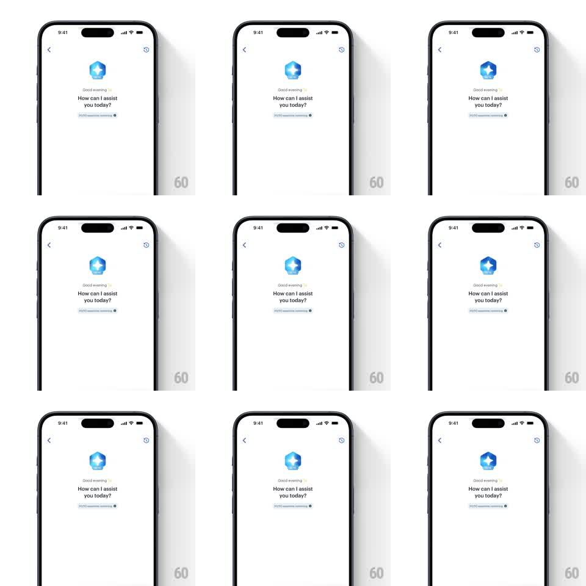

Media
Frame-by-frame

Rebuild this animation 1:1: Smallcase's Wealth Office AI chat header - a faceted blue gem with a white star cutout pulses with a soft glow above the greeting, an ambient loop that keeps the assistant feeling alive.

Rebuild this animation 1:1: Smallcase's Wealth Office AI chat header - a faceted blue gem with a white star cutout pulses with a soft glow above the greeting, an ambient loop that keeps the assistant feeling alive.
## Integration
Integration: stack-agnostic spec - springs given as stiffness/damping, timed motions as duration + curve; map every value to your framework and animation library of choice.
## Scene
AI chat screen, white: back arrow and a reset icon in the top corners; centered - the assistant avatar (a faceted blue-violet gemstone with a white four-point star), "Good evening" in small text, "How can I assist you today?" in bold, and a suggestion chip below.
## Motion spec
Pattern: ambient breathing glow on the AI gem.
- The gem idles with a slow breath: scale 1 -> 1.05 -> 1 over 2.4s, ease-in-out.
- A soft radial glow behind the gem breathes with it (opacity 0.25 -> 0.5, same 2.4s, offset 200ms so the glow lags the scale).
- The white star cutout twinkles: a quick glint sweep crosses it every ~3.5s (a narrow highlight translating across, 400ms).
- Once on entry only: the gem scales in from 0.8 with a spring (~320/16) and the greeting lines fade up beneath it ("Good evening" then "How can I assist...", 250ms each, 120ms apart).
- The suggestion chip fades in last (200ms) and stays static.
## Calibration
- Ambient, not demanding: the loop should read in peripheral vision - no hard pulses or color shifts.
- The gem's facets stay crisp; the glow does the moving.
## Reduced motion
Static gem; single fade-in on entry (250ms).
## Don't miss
- The glow lag behind the scale - that offset is what makes it feel like light, not a drop shadow.
- The glint crosses only the star, never the whole gem.